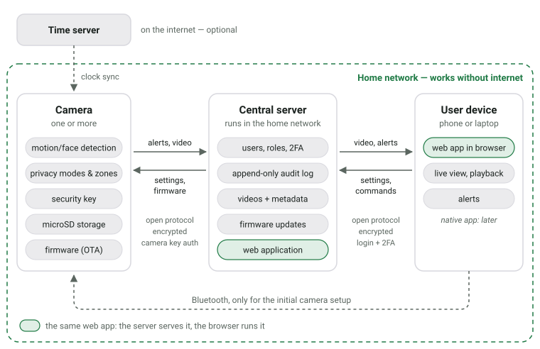

I love thinking about perfect designs for everyday objects. Here is my idea for a perfect security camera. For the cameras that exist today, see Home Security Cameras 2025.
The core principle that all security cameras I know violate is a local-first approach. The camera should still work, even if you have no internet connection. That is possible if you're in the same network as the camera.

Hardware
- Form factor:
- Turret style for easy camera angle adjustment (in contrast to bullet cameras)
- Mounting: Adjustable mount for wall or ceiling installation
- Camera:
- High-resolution sensor
- Wide-angle lens
- Infrared night vision
- Microphone and speaker for two-way audio
- Power:
- Built-in battery for power outages
- Power-over-Ethernet (PoE) support
- USB-C power input as an alternative, with the option to use solar panels
- Storage: microSD card slot for local storage
- Connectivity:
- Wi-Fi
- Ethernet with Power-over-Ethernet (PoE) support
- Bluetooth for initial setup
- Miscellaneous:
- LED to illuminate the area (both infrared and visible light)
- Status LED (configurable to be off during operation)
- Physical privacy shutter
- Weatherproof casing (IP65 or higher)
- Tamper-detection sensor
- On-device clock
Software
{kind=link}

On-Device Software
- Detects motion and faces locally
- Includes a built-in security key to authenticate itself to the central server
- Supports Bluetooth for initial setup
- Synchronizes the on-device clock with a time server
- Supports over-the-air (OTA) firmware updates from the central server
- Setting up privacy modes (e.g., disable recording at certain times) and zones (e.g. masking out certain areas in the camera view) locally on the device
- Setting up
Central Server Software
Authentication:
- Allow multiple users with different roles
- Admin: Full access to all cameras and settings; allow adding new users; allow adding and removing cameras
- Home-User: Access to all cameras of a household; allow changing the angle of cameras; allow receiving alerts; allow enabling lights or using two-way audio
- Allow setting up two-factor authentication (2FA)
Security:
- Audit log of all access and changes. This log cannot be changed, even by admins.
Storage:
- device metadata (online/offline timestamps and installed firmware versions)
- recorded videos with timestamps and associated camera
End-User Application
This could be a native mobile app, but for a start a web application would be sufficient. This web application can run on the central server.
Frontend:
- Overview page: All cameras with the latest snapshot
- Camera detail page:
- Live view
- Recorded videos:
- Playback
- Download
- Camera settings
- Firmware update
- Alert history
Camera ↔ Server Communication Protocol
- Open and publicly documented
- Cryptographic authentication of the camera
- Encrypted communication channel
- Camera can push alerts to the server
- Camera can...
End-User App ↔ Server Communication Protocol
- Open and publicly documented
- User authentication
- Encrypted communication channel